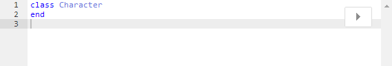
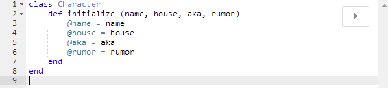
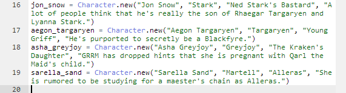
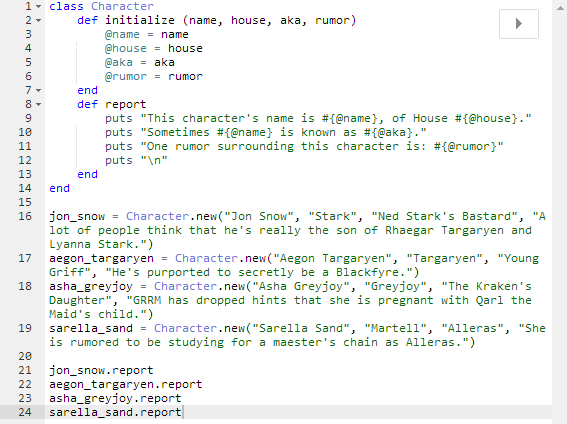
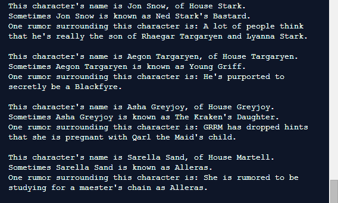

A Class Act
A Basic Guide on Classes and When and How to Use Them
A class is a Ruby object that lets you package up methods and variables so that you can easily create new objects and call those methods on the new objects without repeating yourself for each new object. You can think of a class as a sort of factory for objects, churning out multiple instances of the class and then applying to them whatever methods you've created.
Before I go too far with definitions and descriptions, I'm going to introduce a possible scenario in which you would want to use a class. Fair warning: these examples may contain spoilers for A Song of Ice and Fire (ASOIAF).

Creating a Class
If there's one thing that the ASOIAF books have a lot of (besides death), it's characters. From major players to cameo appearances, there's a lot to keep track of. Creating a class that would allow you to input some information about the character and get a brief report about them would be a great way to remember them. When creating classes (or pretty much anything else in Ruby) you want to give your class a clear name that's relevant to what it contains. Let's call our class "Character."
There we go, we've created our new class. What next?
Filling Out Your Class
Now we need to create something within the class. Because our goal in the end is to create new character objects, and we're going to want each character to be created with a few key pieces of information, we're going to use the initialize method. This will enable the automatic intialization that we're after. Our method will take four pieces of information about the character: name, house, alias, and a rumor about them.
Woah. What are those weird @ symbols doing there? They've got equal signs after them so they look sort of like variables. Well, they are. Unlike local variables though, these are called instance variables. Instance variables are applied to every instance of the class, and can be used by any method in that class. If we had twenty methods in our Character class and they all used the @name variable, it would use the same name to output whatever the method asked. Otherwise we'd have to define name every single time.
NOTE: It's worth mentioning here that alias is a reserved word in Ruby, so I used aka (also known as) for our character's alias information.
Setting Up Our Report
Now we want to create a simple method within the class that will generate a brief report based on each character's information when we call the method.

This report method, along with our earlier intialization method, are what are called instance methods. Just like instance variables, they work with instances of a class. In each instance where we create a character, that character's information will be set to the instance variables because of the initialize method, and we'll get a report when we call the report method on that character.
Creating New Instances
It's time to create a few new characters, which will be instances of our Character class. While there are certainly plenty to choose from, for the purposes of this explanation I've chosen four.
We set jon_snow equal to a new character with a name, a house, an alias (or aka), and a rumor. The same treatment is given to aegon_targaryen, asha_greyjoy, and sarella_sand.
Generating our Report
All that's left is to call our report method so we can see the brief report on these characters. Here's what our code looks like, and what it puts out.
 So why classes?
Just imagine how much more work that would have been if we'd written a separate series of variables and methods for each character. Now if we want to increase our ASOIAF character series we don't have to write more variables and methods, we just have to create a new instance of Character and pass it a few pieces of information. Bet we can do 'em all before The Winds of Winter is published.